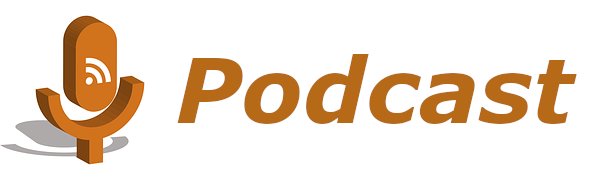

Podcast es un archivo digital de audio u, ocasionalmente vídeo, que se puede descargar de internet. El término podcasting se utiliza para hablar de la distribución de dichos archivos a través de algún sistema de redifusión, por ejemplo, webs o blogs como, por ejemplo: iTunes o Spotify.
Un conjunto de podcast puede formar un programa radiofónico sobre un tema determinado. En otras palabras, podría decirse que cada podcast es un capítulo y el programa completo es el libro. Por tanto, suelen ser breves.
Características
- Permite difundir contenidos de forma simple y con una gran variedad de temas.
- Posibilidad de elegir entre distintos medios para escucharlos.
- Son gratuitos en la mayoría de los casos.
- Para ser más fácilmente accesibles, suelen tener formatos convencionales de audio como mp3 o WAV.
- Facilita la producción en el aula.
Los podcasts resultan una herramienta muy útil dentro del aula por su fácil y rápido manejo. Se pueden grabar en cualquier momento y en cualquier lugar, a través de un móvil, Tablet u ordenador, y cualquier contenido tratado en el aula puede adaptarse a ellos. Además, como suelen ser archivos breves, son fáciles de distribuir en diferentes medios como redes sociales.
Otra de sus beneficios en el aula tiene que ver con el desarrollo de competencias clave como: aprender a aprender, competencia digital y competencia lingüística. La grabación de un tema, la práctica de un diálogo o escuchar un podcast en inglés son actividades que se pueden llevar a cabo mediante podcasts y normalmente resultan más motivadoras y dinámicas para el alumnado.

Difusión
El podcasting es la técnica de difusión de audios. El usuario se suscribe a la URL de un podcast utilizando un programa o un servicio web especifico y ello le permite descargar los audios de ese canal y escucharlos en el momento que desee
El primer paso es crear un canal mediante el cual se puedan distribuir los podcasts. Son muchos y variados los servidores para el almacenamiento de audio, tanto de pago como gratuitos.
Normalmente, los oyentes se descargan una aplicación donde puedan escucharlos o incluso descargarlos offline. Esta es la forma más cómoda, pero también existen páginas donde pueden escucharlos online sin necesidad de guardar el archivo. Los usuarios pueden registrarse o suscribirse al canal para recibir notificaciones sobre nuevos podcasts de su interés.